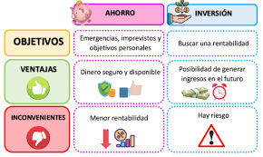
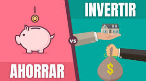
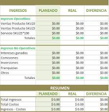
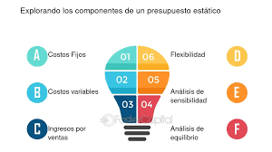
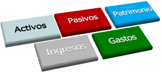

Retos 31-36
Tema no.31 Ahorro e inversión: propósito u objetivo
Definicion breve: El ahorro consiste en guardar parte del ingreso para necesidades futuras o emergencias.
La inversión implica usar ese ahorro para generar ganancias como invertir en un negocio o en fondos.
Ambos permiten lograr metas financieras como comprar una casa, emprender o jubilarse con estabilidad.
Su propósito es crear seguridad financiera y aumentar el patrimonio.

Como se aplica en la vida real: Una persona que guarda parte de su sueldo mensual (ahorro) y lo invierte en un fondo de inversión o compra acciones.
Esto le permite crecer su dinero con el tiempo y alcanzar metas como estudiar, viajar o comprar una casa.

Con que temas se relaciona y por que: Planeación financiera y Ahorro e inversión
La planeación financiera incluye establecer metas y decidir cómo usar el dinero.
El ahorro y la inversión son herramientas esenciales dentro de esa planificación para alcanzar estabilidad y crecimiento económico.
#
Tema no.32 Viabilidad y factibilidad de negocios
Definicion breve: La viabilidad analiza si un negocio es rentable económicamente.
La factibilidad evalúa si es posible ponerlo en marcha considerando recursos, tecnología, mercado y legalidad.
Ambas son fundamentales antes de iniciar un proyecto o empresa.
Permiten tomar decisiones informadas y reducir riesgos.
Como se aplica en la vida real: Antes de abrir una cafetería, alguien estudia si hay suficiente demanda (viabilidad) y si tiene el capital, local y permisos necesarios (factibilidad).
Esto evita iniciar un negocio sin futuro o sin recursos suficientes.
Con que temas se relaciona y por que: Gestión de proyectos y Viabilidad y factibilidad de negocios
Antes de ejecutar un proyecto, es clave analizar su viabilidad y factibilidad.
Esto asegura que el proyecto sea rentable, posible de realizar y alineado con objetivos estratégicos.
#
Tema no.33 Presupuestos: de gastos, ingresos, ventas, financiamiento, de efectivo: plan de acción, componentes del presupuesto
Definicion breve: El presupuesto es una herramienta para planear y controlar el dinero.
Tipos comunes:
1.Gastos e ingresos: controlan entradas y salidas de dinero.
2.Ventas: proyecta cuánto se espera vender.
3.Financiamiento: indica cómo se obtendrán recursos externos.
4.Efectivo: asegura que haya liquidez.
Un presupuesto incluye metas, supuestos, cifras y tiempos.

Como se aplica en la vida real: Una familia crea un presupuesto mensual donde calcula ingresos (sueldos), gastos (alquiler, comida) y ahorra lo que sobra.
En una empresa, se elabora un presupuesto de ventas para proyectar ingresos y un plan de financiamiento si hay déficit.
Con que temas se relaciona y por que: Administración y Presupuestos
La administración necesita presupuestos para planificar, organizar y controlar los recursos financieros de una empresa o proyecto.
Un buen presupuesto permite tomar decisiones administrativas eficientes y prever resultados.

#
Tema no.34 Elementos básicos contables
Definicion breve: Los elementos contables son:
1.Activo: lo que posee una empresa (dinero, bienes).
2.Pasivo: lo que debe (deudas, obligaciones).
3.Patrimonio: lo que realmente le pertenece (activo - pasivo).
También están ingresos, gastos y capital.
Estos elementos permiten llevar un control financiero y tomar decisiones acertadas.
Aplicación en la vida real: Un emprendedor se registra bajo el Régimen Simplificado para pagar menos impuestos y declarar de forma sencilla.
Elige el régimen según el tamaño de su negocio, actividad y facturación anual.

Con que temas se relaciona y por que: Elementos básicos contables y Retenciones y facturación
La contabilidad registra operaciones como ingresos, gastos, facturación y retenciones fiscales.
Estos elementos permiten llevar un control exacto de las obligaciones legales y financieras.
#
Tema no.35 Regímenes de tributación
Definicion breve: Los regímenes de tributación son formas en que las personas o empresas pagan impuestos según su actividad y tamaño.
Como se aplica en la vida real: Un emprendedor se registra bajo el Régimen Simplificado para pagar menos impuestos y declarar de forma sencilla.
Elige el régimen según el tamaño de su negocio, actividad y facturación anual.
Con que temas se relaciona y por que: Regímenes de tributación y Retenciones y facturación
El régimen de tributación determina cómo una persona o empresa factura, qué impuestos debe aplicar y cuánto retener.
Ambos temas son clave para cumplir correctamente con las leyes fiscales.
#
Tema no.36 Las retenciones, facturación
Definicion breve: Retenciones: Es cuando una parte del pago se le descuenta al trabajador o proveedor para pagar impuestos directamente al Estado.
Facturación: Es la emisión de un comprobante legal por una venta o servicio, y debe incluir impuestos como el IVA.
Ambos son claves en el cumplimiento de obligaciones fiscales.
Como se aplica en la vida real: Un trabajador recibe su salario con retención de impuestos ya descontada (como ISR).
Una empresa emite facturas electrónicas al vender productos, incluyendo IVA e información fiscal obligatoria.
Esto asegura el cumplimiento con Hacienda y evita sanciones

Con que temas se relaciona y por que: Elementos básicos contables y Retenciones y facturación
La facturación y las retenciones deben registrarse contablemente como ingresos, gastos o impuestos por pagar.
Sin una correcta contabilidad, no se puede llevar el control de cuánto se debe al fisco ni cuánto se ha cobrado o pagado con impuestos incluidos.